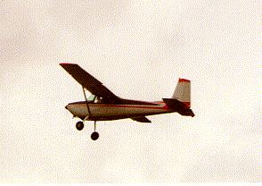
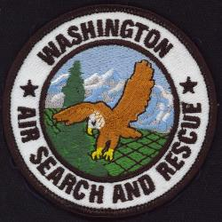
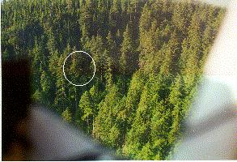
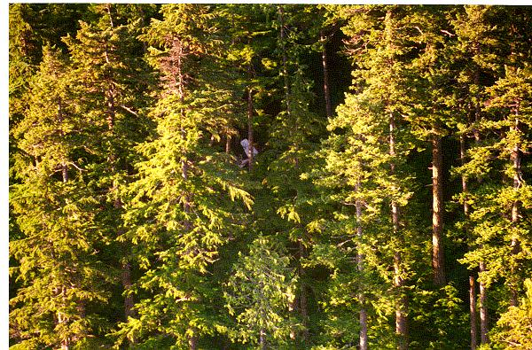
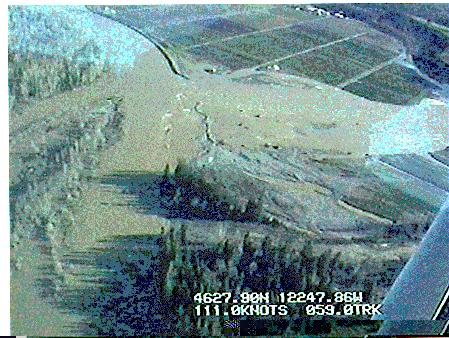
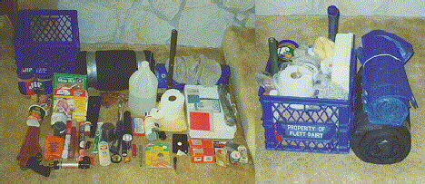
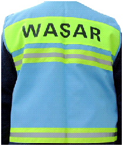
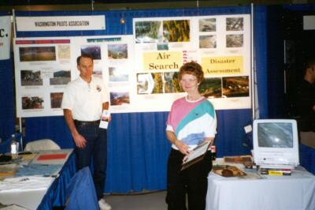

- Air Search and Search Support
- Disaster and Emergency Services Airlift
- Search practice and currency training exercises
- Donate!
- Join!
- Be Prepared! Get some Training and carry Survival Gear
- WASAR Apparel (for Christmas)
- Contacting WASAR....
- High-Tech SAR with Infrared; will it work?
- Some friendly SAR links
WASAR was formed in 1993 as a 501C3 (tax deductible, charitable corporation) by the Washington Pilots Association (WPA). WASAR was established to support Air Search and Rescue activities directed by the Washington State Department of Transportation -- Aviation Division (WSDOT-AD) .
We are made up of several hundred state qualified search pilots, observers and air vehicle owners who live in or near Washington and who want to do something meaningful in service of the state's citizens. Our membership include everything from young student volunteers to 25,000 hour flight test pilots. The Civil Air Patrol (CAP) is among our ranks, along with SAR-qualified WPA, Military and County Sheriff personnel.
If you are interested in more detail, please inspect the WASAR Bylaws. These resulted from some hard work by WASAR Board members Al Banholzer, Sandy Robinson and Tom Jensen and may be useful to those interested in starting a similar organization in another state.

This is a typical WASAR member-owned airplane available for search and other work. It's one of the best bargains that Washington State citizens could ever hope for!! (1956 Cessna 180 belonging to Nancy Jensen)
Over 200 privately owned air vehicles are available at the call of WSDOT-AD, including turbine helicopters, floatplanes, and fixed-wing singles and twins. Installed equipment includes DF gear and even some installed TV equipment used for disaster assessment work.
Return to Table of Contents
WASAR's prime role is to support Washington State Department of Transportation -- Aviation Division (WSDOT-AD) in their SAR and Emergency Management airlift role.

Members and their equipment are available 24 hours a day to support Air SAR activities at the direction of WSDOT-AD.
Search flying is tiring, demanding work which requires careful teamwork if it is to be done effectively. During a search, a pilot-observer team might typically be assigned a 7.5 minute by 7.5 minute (about 5 by 7.5 nautical miles) grid box. Even with two observers aboard, this will take over two hours to cover thoroughly.
Most Search flying is done at a 500-1000' altitude and 70- 80 knots, presenting a picture like this:

Tremendous concentration is required! So you can actually see the airplane wreckage in this picture, the lower photo was from only 200', taken with a telephoto lens.

Return to Table of Contents
Disaster and Emergency Services Airlift
WASAR provides emergency airlift and other special services at the request of WSDOT-AD to support state and county agency needs during natural disasters and preparadeness drills. The video image below is of a breached levee on the Cowlitz River in February 1996.

Survival Education and Equipment
EVERYBODY who flies in Washington should carry minimal survival gear! My "Fanny Pack", always carried on my body is shown below.

This little bit of gear could save your bacon sometime! In addition, I always carry a full survival kit, with first aid and water, in the back. This weighs about 40lbs but is very complete as listed below. Write me at: c180tom@eskimo.com if you have questions, suggestions, or favorites you think should be carried.
By request, here's a listing of my favorite 40# survival kit.Some Back Country Survival Gear Ideas
Item Weight Plastic milk case organizer 3.00# 100ft. Parachute Cord 0.25# Wool watch cap and mitts 0.25# Sleeping bag 4.00# Poly Tarp with grommets 1.50# Well-equipped 1st aid kit w/ triage instruct. 7.25# Folding shovel 1.75# Axe with sheath (and file if not in tools) 3.00# Water 5.00# Water filter 0.50# Toilet paper, wringable towel, glasses,
bee sting kit, prescription medicines (if needed),
USAF survival mirror, pen, compass1.00# Fishing lines, hooks, weights, lures, eggs 0.50# Hunting and Swiss Army Officer's knife 0.75# Sunscreen, brass wire for critter snare 0.25#td> Flashlights with extra batteries 1.00# Peanut butter or other calories (12,000 min.) 2.50# Red aerial flares, smoke, fusees, whistle 2.25# Waterproof matches, cotton w/ vaseline 0.25# Emergency Survival Handbook - Mess kit, Sterno and folding stove /td> 1.75# Bear repellents (.44 and pepper spray) 4.00# Total 40.75# The above is in addition to the fanny pack, and could be lightened with some careful (and more expensive) choices. I collected this list by starting with Canadian and Alaskan (including Alaskan Airmans Handbook) recommendations, then adding or subtracting depending on environmental or legal conditions (Canada disallows handguns, but non-mace pepper spray and long guns are okay), and actual experience using the gear.
The gear listed in the table is shown at left below, and most of it fits in the "organizer" as shown on the right. Unlike the fanny pack, this gear must be viewed as "camping equipment", because it is stored in back and might not survive a crash/fire from which only you escape. (Thus the fanny pack.)

Please write with your comments and suggestions, but CARRY SURVIVAL GEAR!
Cool WASAR gear is avalable to provide brand identity and show a professional appearance. This apparel is available by contacting Tom Nesko at 425-821-2780 or email tom.nesko. Hats are $5, Vests are $10 (partially subsidized by WASAR for safety-the vests have reflective tape and are highly visible.)


Search Practice and Currency Training Exercises
Practice Searches as shown in the Search and Rescue Training Schedule are one means by which pilots may maintain required currency and sharpen their skills, all to improve safety during the difficult conditions of an actual search. Some activity (a class, an actual search, an ELT "hunt", or a Practice Search) and a pilot checkride is required at least every two years to maintain your current pilot status on the Search Specialty List used for callups.
Donate!
WASAR is a 501C3 corporation. Please send your tax- deductible donations to:
Washington Air Search And Rescue
P.O. Box 2174
Renton, WA 98056
Donations may be made to benefit WASAR in Washington via your Boeing Employees Good Neighbor Fund or United Way "Designation". Such designation is painless and directly benefits Air SAR. WASAR is approved for "designation" by Boeing Employees Community fund and various Federal, County and City Combined Campaigns. Look for us in the alphabetical listing of your workplace charitable campaign.
You may also donate online at the Local Independent Charities secure website www.lic.org.
Join!
You may join WASAR by attending a WSDOT Orientation course which will explain "the system" and help you learn if you want to make that important committment to help.
At that time, you may apply to the state and then take the ASAROC 101 basic mission aircrew course to gain qualification as an observer.
With the requisite experience, a flight check with a designated mentor pilot can qualify you as a search pilot. Classes and checkrides are provided by the Washington State Department of Transportation -- Aviation Division (WSDOT-AD) . Call 1-800-552-0666 to register for a free class and to verify the unofficial information listed in the schedule listed below.
We also invite you to join the Washington Pilots Association (WPA) for your benefit in association fun, "networking" and neat things to do with your airplane.
In addition to launching WASAR, the WPA is there to promote progress and development of aviation in Washington, to promote flying safety and education , and to encourage upkeep of aviation facilities.
To join the WPA, pick up a free copy of the WPA WINGS magazine or a WPA application at your local FBO, or call 1-800-WPA-FLYS.
WASAR Supports N.W. Aviation Show

WASAR and the WPA again shared a booth at the N.W. Aviation Show in Puyallup, February 2006. Thanks to volunteer efforts by several folks, we had a nice, professional-looking display with fancy track lighting, all on the cheap. The booth was well manned and womaned by the usual trusty volunteers eager to talk to pilots and the public. Above are Tom Jensen and Peggy Richcreek greeting visitors at the 2002 show.
WASAR acts at the direction of WSDOT-Aviation Division, who may be contacted at 1-800-552-0666. If for any reason you are unable to contact them, for EMERGENCY purposes, my pager is 206-626-1612.
For other contact, please call 253-833-6777
WASAR helps Search Safety!!
Regular Practice Searches are normally an out-of-pocket in the face of other living expenses. WASAR now regularly will be paying for sortie fuel at search practice exercises. Our intention is to improve the safety of SAR flights by making Practice Searches more affordable.
WASAR Supports the Wenatchee Mountain Flying Course
WPA president Jim Smith is working with Wings of Wenatchee's Al Hunter on the possibility of a public MFC next spring. Please contact them to offer expressions of interest.
2006 SAR Training and Education Opportunities
Since 911, Federal requirements for Air SAR and other volunteers have been tightened. This means that volunteers will have to agree to a background check and some basic training such as the FEMA IS-700 course, available online. The Aviation Division is working through the initial applications (sent to current WASAR and CAP folks) so training is temporarily on hold. Standard Operating Procedures are being developed as are classification ("Mission Pilot Typing") of our pilots.
Rogersberg is OPEN until November 15, 2007!

The fish are in danger now!! Working with the BLM and WSDOT-AD, volunteers did something great for backcountry aviation. Our favorite airstrip is closed per our BLM agreement to avoid the possibility of eagle roosting.. There are some pictures showing volunteers working to reopen our fishing hole.
Could long-infrared (3-5 micron wavelength) thermal imaging equipment benefit our air SAR work in a practical fashion? Check out the report and tell us what you think about this aerial infrared experiment by a few WASAR volunteers.
WASAR is also experimenting with airborne ATV as might aid disaster assessment. If you have some expertise and would like to help, please contact us at the link below.
Some good people to know, should you ever lose your way:
- USAF Rescue Coordination Center
- USCG Lost Coast SAR/AirStaHumBay
- CASARA (Civil Air Search and Rescue Association -- Canada)
- PEP Air/CASARA
- Washington Wing, Civil Air Patrol
Aviation info, a SAR group locator, and other useful contacts are at:
Return to Table of Contents
FastCounter by bCentral
hits since: Sunday, December 22, 1996 - 9:00 PM
THIS PAGE IS ALWAYS UNDER CONSTRUCTION. ( I'm a search pilot, not a web page expert, so your suggestions are welcome!) I'll also try to answer your SAR questions.
Original 12-17-96; Updated 4-12-06.
Questions & Suggestions to Tom Jensen at: c180tom@eskimo.com